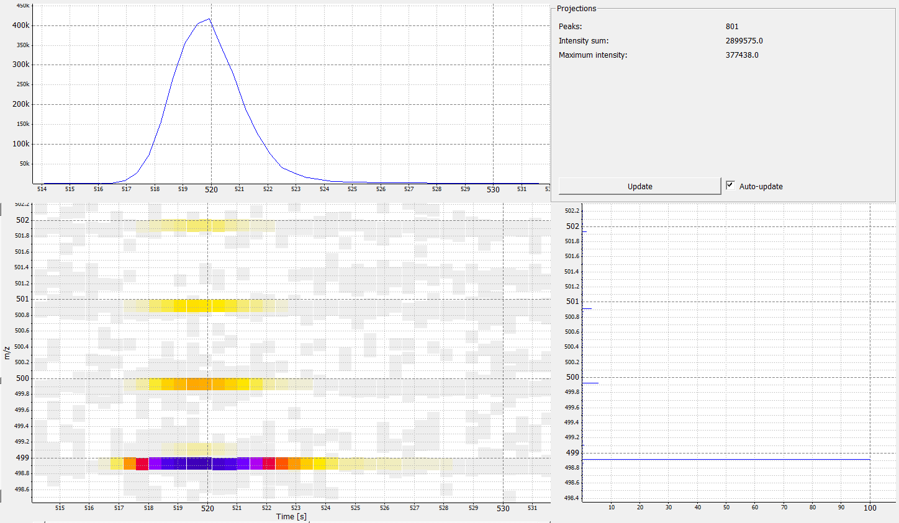
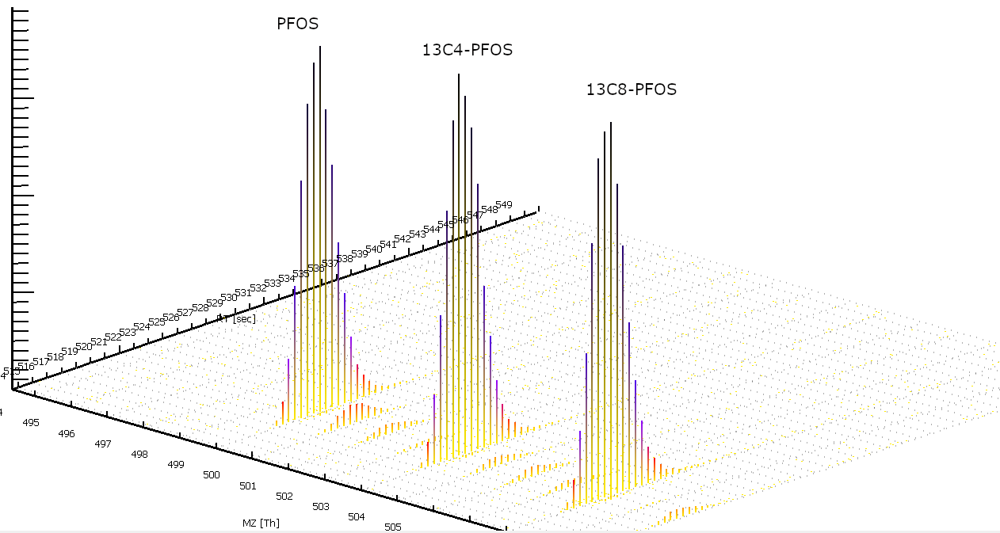

library(readxl)
library(knitr)5 Pre-processing HRMS data
5.1 Raw data conversion
5.1.1 MSConvert
| What | Code | Comment |
|---|---|---|
| Website | https://proteowizard.sourceforge.io/tools/msconvert.html | NA |
| Docker: Pull from docker repo | docker pull chambm/pwiz-skyline-i-agree-to-the-vendor-licenses | NA |
| Docker: Help | docker run -it –rm chambm/pwiz-skyline-i-agree-to-the-vendor-licenses wine msconvert –help | NA |
| Docker: convert a file | docker run -it –rm -e WINEDEBUG=-all -v /your/data:/data chambm/pwiz-skyline-i-agree-to-the-vendor-licenses wine msconvert /data/file.raw | docker run -it –rm -e WINEDEBUG=-all -v /home/ORUNET.ORU.SE/twg/Windows_home/Raw_Data/Guo_Feng/100.RAW:/data chambm/pwiz-skyline-i-agree-to-the-vendor-licenses wine msconvert /data/100.raw |
| Docker: convert all the files in a folder | docker run -it –rm -e WINEDEBUG=-all -v /your/data/path/*.RAW:/data chambm/pwiz-skyline-i-agree-to-the-vendor-licenses wine msconvert /data/ | docker run -it –rm -e WINEDEBUG=-all -v ~/Windows_home/Raw_Data/Kallinge/New_analysis_20200414/test/*.mzML:/data chambm/pwiz-skyline-i-agree-to-the-vendor-licenses wine msconvert /data/ |
| use vendor centroiding for msLevels in [1,2] | msconvert data.RAW –filter “peakPicking true [1,2]” | NA |
| Docker: use vendor centroiding for msLevels in [1,2] | docker run -it –rm -e WINEDEBUG=-all -v /home/ORUNET.ORU.SE/twg/Raw_data/Kallinge/New_analysis_20200414/centroid/:/data chambm/pwiz-skyline-i-agree-to-the-vendor-licenses wine msconvert /data/*.mzML –filter “peakPicking true [1,2]” –mzXML | Works now but need to copy files to the tla-01/02 server to be ok. From Yu Miao: The only issue is that if you convert mzML to another mzML, you will get an error about “Output filepath is the same as input filepath”. So I added ‘–mzXML’ to give another name. The only issue is that if you convert mzML to another mzML, you will get an error about “Output filepath is the same as input filepath”. So I added ‘–mzXML’ to give another name. This command contain two parts. The first part mapping your local mzML folder to the docker image’s ‘data’ folder. The second part is convert mzML files in this folder into new files. |
5.1.2 Waters MSe
https://ccms-ucsd.github.io/GNPSDocumentation/fileconversion_waters/
5.2 Peak picking


## Alignment
## Componentization
## Proprietary and standardized MS data format
See: https://en.wikipedia.org/wiki/Mass_spectrometry_data_format
5.3 Open tools for preprocessing
5.4 OpenMS and Toppview
xx
https://www.youtube.com/watch?v=GuK1daIc6vo&list=PL2u38g_AG4MH7yCMF06N2VW7eZOJcglh7&index=5
## MSConvert xx
5.5 MsnBase and XCMS
xx
5.5.1 XCMS
Check: A scalable workflow to characterize the human exposome, SI-11, https://www.nature.com/articles/s41467-021-25840-9#MOESM14
IPO optimization
5.5.2 CAMERA
http://www.metabolomics-forum.com/index.php?topic=278.0 calcCiS: Calculate correlation inside samples That means correlation across the peak = is it really coeluting or not? It is correlation inside the sample; not inside a sample group. This means that camera goes back to the raw data and compares extracted ion chromatograms. The illutration in Carsten’s paper show this: http://pubs.acs.org/doi/abs/10.1021/ac202450g This will fail if compounds are perfectly coeluting.
calcCaS: Calculate correlation accross samples They are correlated if high intensity of feature A means high intensity of feature B. The study design or sample groups are not used for this information. Look at these plots. Each dot is a sample.
5.6 PatRoon
xx
https://www.researchsquare.com/article/rs-36675/v1
https://rickhelmus.github.io/patRoon/articles/tutorial.html
OpenMS performs peak picking and isotope grouping in one step (any idea how to turn off this?), while XCMS does not perform this step here. From Rick: For OpenMS: you can use a trick for this by setting localMZRange=0, this way OpenMS won’t be able to look for isotopes. Note that its detection was more developed for ‘natural compounds’ (eg proteomics, metabolomics) in mind, and that it isn’t really good in grouping halogenated peaks anyway.
PatRoon Docker:
In linux, run:
docker run –rm -p 8787:8787 -u 0 -e PASSWORD=yourpasswordhere -v /home/ORUNET.ORU.SE/twg/Raw_data:/home/rstudio/Raw_data patroonorg/patroonrs /init
5.7 MS-DIAL
MS2Dec:
Sigma window value: 0.1 - 1.0. Smaller value will avoid clustering of peaks that are far from each other (false positive grouping).
In GC-HRMS, try 0.8 to separate and deconvolute very closely coeluting peak in GC (+-1). These parameters should be tested with e.g. QC samples with known compounds to get best deconvolution parameter for your samples.
MS/MS abundance cut off: increase to remove background noise
5.8 Output formats
- MSnExp and XCMSnExp
- MSP
- MFG
- CSV (for both output data or metadata)